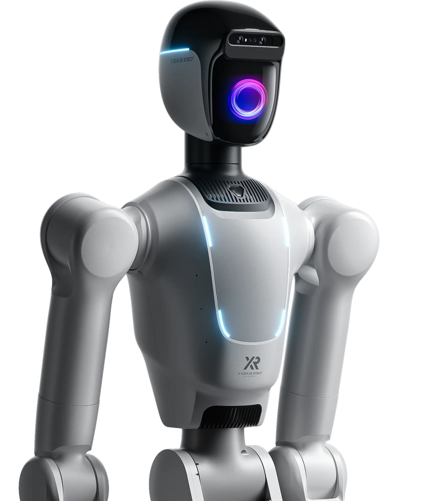

X Square, le nouveau pari humanoïde d’Alibaba
par O.Abdelwahd · Publié le 17 septembre 2025

Le Quanta X2 présentés par X Square Robot. Crédit: X Square Robot
Il vient d’être annoncé que c’est le groupe chinois Alibaba, concurrent d’Amazon, qui, via sa branche intelligence artificielle et cloud Alibaba Cloud, a participé au financement de la société X Square Robot à hauteur de 100 à 140 millions de dollars selon les sources.
Ce tour de table a été mené aux côtés d’autres investisseurs tels que CAS Investment, China Development Bank Capital, HongShan Capital Group, Meituan et Legend Capital.
Le point intéressant est qu’il s’agit du premier investissement direct d’Alibaba Cloud dans le secteur de la robotique humanoïde, ce qui constitue en quelque sorte une confirmation de l’intérêt des géants industriels pour l’IA incarnée et la robotique en général. Cela dit, Alibaba Group avait déjà entamé sa présence dans la robotique et l’IA incarnée à travers des investissements dans Unitree, Corenetic AI, Robotera, LimX Dynamics et Galaxea.
La société en question, X Square Robot, a été fondée en 2023 par Wang Qian, diplômé de l’université Tsinghua et docteur en robotique de l’Université de Californie du Sud.
X Square Robot a déjà présenté deux produits phares :le Quanta X2, un robot humanoïde à roues et à deux bras dévoilé lors du World Robot Conference à Pékin le 9 août dernier et
Mais l’entreprise joue sur deux tableaux : le hardware, avec le Qunta X2 et l’Artixon Hand, mais aussi le software, avec la création de modèles d’IA tels que Wall-OSS 4.2B, spécialement conçus pour la robotique incarnée. Selon Wang Qian, ce modèle opensource doit permettre aux robots de comprendre et d’agir efficacement dans des environnements réels.
Les Humanoïdes à la poursuite de la robotique utilitaire
Jusqu’ici, les investissements se concentraient sur des machines dédiées à des tâches précises, loin du modèle humanoïde généraliste. Chris Walti, ancien de Tesla, avait même émis des réserves en affirmant que des robots humanoïdes comme Optimus n’étaient pas la meilleure option pour le travail en usine. Mais il semble que le vent tourne — c’est en tout cas le cas en Chine, où l’intérêt des investisseurs pour l’intelligence incarnée s’accélère.
Les robots humanoïdes sont en effet entrés en production de masse cette année. Et les grands noms de la robotique humanoïde sont désormais largement dominés par des compagnies chinoises telles que Unitree Robotics, UBTech Robotics et LimX Dynamics, qui ont toutes levé d’importants financements en 2025, sous l’impulsion de Pékin, qui s’est donnée pour mission de bâtir une véritable filière domestique de robots humanoïdes. La portée de cet effort a été visible lors du World Robot Conference cet été.
De son côté, Tencent, autre géant technologique chinois, a lui aussi investi dans des sociétés de robotique comme UBTech Robotics et AgiBot, tout en menant ses propres activités de recherche en robotique.
L’entrée d’Alibaba Cloud dans la robotique humanoïde illustre l’intérêt grandissant des géants technologiques pour ce domaine. Alors que la robotique utilitaire — centrée sur des tâches spécifiques — a longtemps dominé, une question se pose désormais : les robots humanoïdes finiront-ils par rattraper, voire dépasser, la robotique utilitaire en termes d’applications et d’adoption industrielle ?